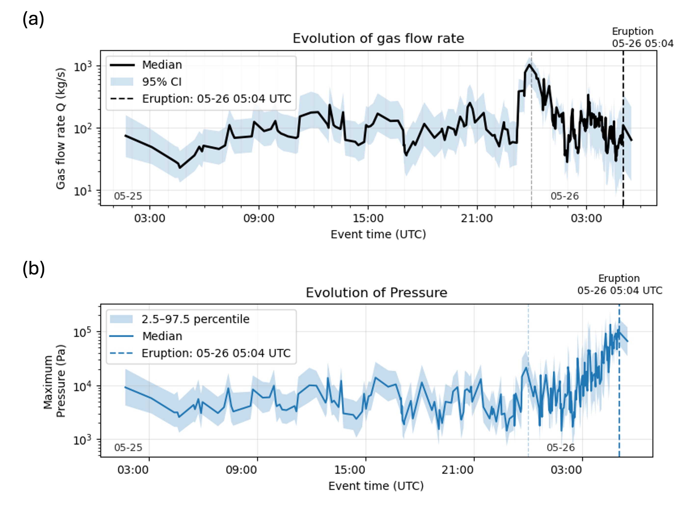
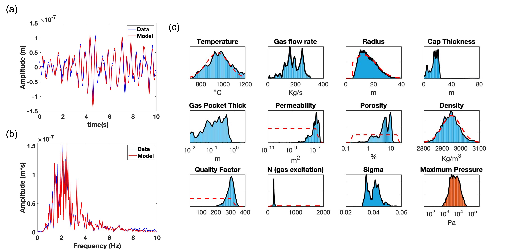
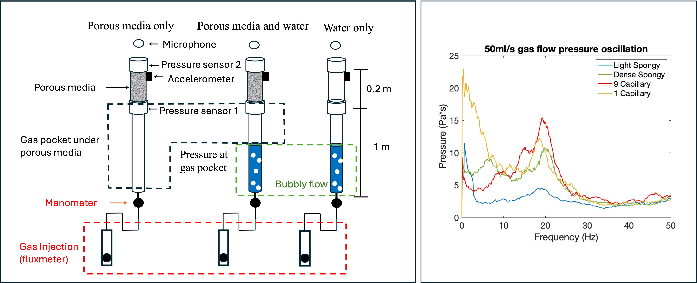
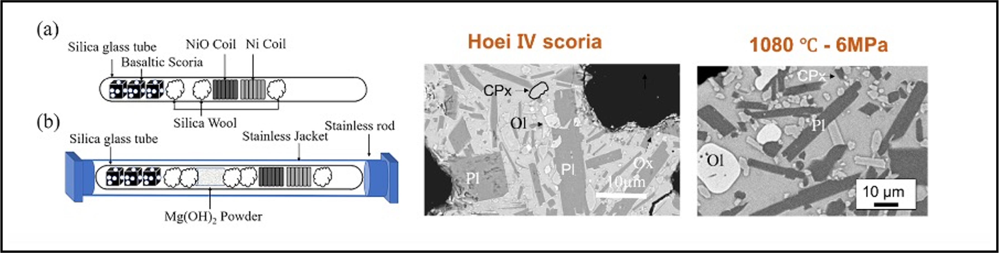
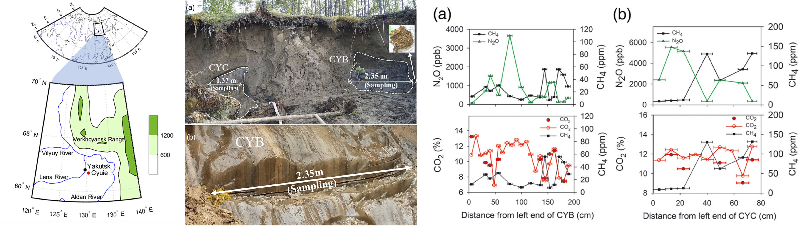

Research
Research Project at UAF-GI
Sequential data assimilation of LP seismicity
Tracking subsurface evolution and gas flow at Great Sitkin using the Ensemble Kalman Filter
Building on the leaky gas pocket (LGP) model, this project integrates physics-based modeling of volcanic seismicity with observational seismic data to track volcanic activity. I apply an Ensemble Kalman Filter (EnKF) framework to sequentially assimilate seismic observations and estimate the temporal evolution of key physical parameters, particularly gas flow rate. Model and data uncertainties are explicitly incorporated through ensemble-based updates of state variables and model parameters. This approach enables continuous tracking of subsurface gas dynamics and is currently being applied to monitor the evolving eruptive activity of Great Sitkin Volcano, Alaska.

Bayesian Inversion of LP Seismicity Using a Gas Pocket Model
Long-period (LP) seismicity is commonly observed in volcanic systems and is often attributed to the dynamics of magma or hydrothermal fluids. The leaky gas pocket model proposed by Girona et al. (2019) explains LP seismicity as pressure oscillations of trapped gas beneath a volcanic dome coupled with permeable gas flow through the dome.
In this project, I apply a Reversible-Jump Bayesian Markov Chain Monte Carlo (RJ-MCMC) approach to estimate probability distributions of key physical parameters governing the system. This framework allows exploration of model complexity while explicitly quantifying uncertainties in inferred parameters. The method is currently applied to Great Sitkin Volcano, Alaska, and will be extended to other volcanic systems.

Research Project with INGV, Italy
Laboratory experiments on Long-Period Seismicity
This collaborative project investigates the characteristics of gas flow–generated seismicity associated with volcanic LP events and tremor. A key question is whether the source mechanisms of gas-driven seismicity can be characterized at laboratory scale.
Through laboratory experiments conducted with INGV, Italy, we simulate pressure oscillations generated by gas flow through bubbly flow and porous media systems, which represent potential analogs for volcanic LP and tremor sources. The results demonstrate that distinct pressure oscillation spectra emerge under conditions where gas is temporarily trapped beneath porous media, supporting a mechanism for gas-driven seismic signals in volcanic environments.

Research Project at Tohoku University
Petrological, Numerical study of Historical Eruption of Mt. Fuji (1707 CE)
The Hoei eruption of Mt. Fuji (1707 CE) is the last large eruption of Fuji Volcano that a few cm of ash fall was observed at Edo (current Tokyo). That eruption is Plinian (large, explosive) style eruption which is rare for its composition (mostly basaltic). The rapid crystallization during the ascent of the magam may take significant role in the eruption dynamics which can change the apparent viscosity of magma. The micro-size crystals observe in the SEM images of the erupted scoria of Hoei eruption may contains information regarding T,P condition of the last stage of eruption. We did chemical and petrographical analysis of Hoei scoria and compare it with the run products from high temperature experiment. The conduit flow dynamics of the Hoei eruption can be simulated based on the Petrologically constrained results. This research has mostly done at Tohoku University and developed more while I am in University of Alaska Fairbanks.

Research Project at Seoul National University
Greenhouse Gas (CO2, CH4, N2O) formation in ice wedge at central Yakutia (Siberia)
Most of the land in the high latitude region of norhtern hemisphere (Siberia, Alaska, Scandinavia or Northern Canada) consist of Permasfrost. Permafrost have active layer in the surface which melt in summer and frozen in winter, but it perennially frozen under that layer which means ice can survive several years or even tens of thousands of years from last ice age. One of the most common type of ice observed in permafrost is ice wedge which developed in wedge-shape. Analysis of ice wedge can give us information regarding Paleoclimate because it survive through geological time. The gas chemistry of ice wedge is also important to investigate because significant of permafrost will expect to melt due to the climate change and it will emit additional greenhouse gas to the atmopshere. The fieldwork of coring ice wedge sample was held in 2015 summer with the cooperation of SNU and Melnikov Permafrost Research Institute at central Yakutia. The CO2 concentration observed as 7 - 13 % and CH4 concentration observed as 7 - 131 ppm in ice wedge at Cyuie Village. The N2O concentration, which is first measured in my research, show 64- 5500 ppb. The formation of CO2 and CH4 likely due to the biological respiration, which implies microbial activity in sub-zero temperature. The high variability of N2O concentration implies both consumption and generation procedure within the ice wedge.
